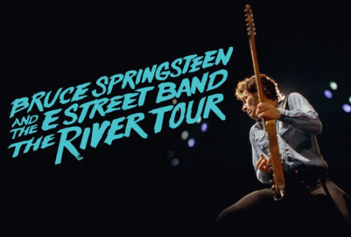

Be patien while tiles load
Jan 16, 2016
Pittsburgh, PA. Consol Energy Center
Set List
- Meet Me In The City
- The Ties That Bind
- Sherry Darling
- Jackson Cage
- Two Hearts
- Independence Day
- Hungry Heart
- Out in the Street
- Crush on You
- You Can Look (But You Better Not Touch)
- I Wanna Marry You
- The River
- Point Blank
- Cadillac Ranch
- I'm a Rocker
- Fade Away
- Stolen Car
- Ramrod
- The Price You Pay
- Drive All Night
- Wreck on the Highway
- Badlands
- Wrecking Ball
- Backstreets
- Because the Night
- Brilliant Disguise
- The Rising
- Thunder Road
Encore
- Rebel Rebel
- Bobby Jean
- Dancing in the Dark
- Born to Run
- Rosalita (Come Out Tonight)
- Shout
Jan 19, 2016
Chicago, IL. United Center.
Set List
- Meet Me In The City
- The Ties That Bind
- Sherry Darling
- Jackson Cage
- Two Hearts
- Independence Day
- Hungry Heart
- Out in the Street
- Crush on You
- You Can Look (But You Better Not Touch)
- I Wanna Marry You
- The River
- Point Blank
- Cadillac Ranch
- I'm a Rocker
- Fade Away
- Stolen Car
- Ramrod
- The Price You Pay
- Drive All Night
- Wreck on the Highway
- Night
- No Surrender
- Cover Me
- She’s the One
- Human Touch
- The Rising
- Thunder Road
Encore
- Take It Easy
- Born to Run
- Dancing in the Dark
- Born to Run
- Rosalita (Come Out Tonight)
- Shout
Jan 27, 2016
New York, NY. Madison Square Garden
mp3 downloadSet List
- Meet Me In The City
- The Ties That Bind
- Sherry Darling
- Jackson Cage
- Two Hearts
- Independence Day
- Hungry Heart
- Out in the Street
- Crush on You
- You Can Look (But You Better Not Touch)
- I Wanna Marry You
- The River
- Point Blank
- Cadillac Ranch
- I'm a Rocker
- Fade Away
- Stolen Car
- Ramrod
- The Price You Pay
- Drive All Night
- Brilliant Disguise
- Wrecking Ball
- The Rising
- Thunder Road
Encore
- Born to Run
- Dancing in the Dark
- Rosalita (Come Out Tonight)
- Shout
Jan 29, 2016
Washington, DC. Verizon Center
Jan 31, 2016
Newark, NJ. Prudential Center
Feb 2, 2016
Toronto, ON. Air Canada Centre
Feb 4, 2016
Boston, MA. TD Garden
Feb 8, 2016
Albany, NY. Times Union Center.
Feb 10, 2016
Hartford, CT. XL Center
Feb 12, 2016
Philadelphia, PA. Wells Fargo Center
Feb 16, 2016
Sunrise, FL. BB&T Center
Feb 18, 2016
Atlanta, GA. Philips Arena
Feb 21, 2016
Louisville, KY. KFC Yum! Center
Feb 23, 2016
Cleveland, OH. Quicken Loans Arena
Feb 25, 2016
Buffalo, NY. First Niagara Center
Feb 27, 2016
Rochester, NY. The Blue Cross Arena at the War Memorial
Feb 29, 2016
St Paul, MN. Xcel Energy Center
Mar 3, 2016
Milwaukee, WI. BMO Harris Bradley Center
Mar 6, 2016
St Louis, MO. Chaifetz Arena
Mar 10, 2016
Phoenix, AZ. Talking Stick Resort Arena
Mar 13, 2016
Oakland, CA. Oracle Arena
TicketsMar 15, 17 & 19 2016
Los Angeles, CA. Los Angeles Memorial Sports Arena

ANNOUNCING THIRD AND FINAL
LOS ANGELES MEMORIAL SPORTS ARENA CONCERT
Bruce Springsteen and the E Street Band launch The River Tour, a nine-week US trek to coincide with the recent release of “The Ties That Bind: The River Collection,” a comprehensive look at the era of the 1980 “The River” album that “Rolling Stone” calls “Springsteen’s best archival release yet.”
After selling out concerts scheduled for March 15th & March 17th, Bruce Springsteen and the E Street Band announces a third and final performance at the Los Angeles Memorial Sports Arena on Saturday, March 19th for the final rock-n-roll shows in the history of the Arena before it permanently closes its venerable doors.
Tickets for the just-added date go on sale Friday, January 29th at 10:00am through Ticketmaster.
TicketsVenue:
Los Angeles, CA 90037 United States
Los Angeles Memorial Sports Arena
3939 South Figueroa Street
TICKETS ON SALE FRIDAY, JANUARY 29TH 10:00AMTICKETS: $65 • $105 • $150
Mar 28 2016
New York, NY. Madison Square Garden
Capacity: 20000
Mar 31 2016
DENVER, CO. Pepsi Center
.
Tickets.
.
Apr 3 2016
OKLAHOMA CITY, OK. Chesapeake Energy Arena
TicketsApr 5, 2016
DALLAS, TX. American Airlines Center
Apr 7, 2016
KANSAS CITY, MO. Sprint Center
Apr 10, 2016
GREENSBORO, NC. Greensboro Coliseum
Apr 14, 2016
AUBURN HILLS, MI. The Palace of Auburn Hills
Apr 18, 2016
UNIVERSITY PARK, PA. Bryce Jordan Center
Apr 20, 2016
BALTIMORE, MD. Royal Farms Arena
Apr 23 & 25, 2016
BROOKLYN, NY. Barclays Center
May 19, 2016
LISBON, PORTUGAL. Rock In Rio, Bela Vista Park
Tickets Bruce Springsteen and the E Street Band launch The River Tour 2016, a nine-week US trek, on Jan. 16 in Pittsburgh. The announcement of the tour coincides with the release of “The Ties That Bind: The River Collection,” a comprehensive look at the era of the 1980 “The River” album that “Rolling Stone” calls “Springsteen’s best archival release yet.” The box set is now available at Amazon (4CD/3DVDs or 4CD/2Blu-ray) and iTunes.
Each night of the tour will be mixed for release on Live.BruceSpringsteen.net as high-quality downloads and CDs. Recordings will be available within days of each performance.
The original The River Tour began Oct. 3, 1980, two weeks before the release of Springsteen’s fifth album, and continued through Sept. 4, 1981. With sets that regularly approached the four-hour range, the 140-date international tour firmly established a reputation for Bruce Springsteen and the E Street Band as marathon performers
Adapted from brucespringsteen.net